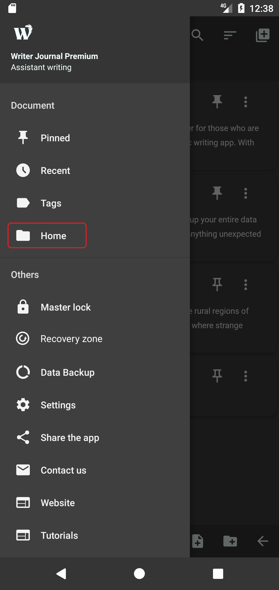

Documents
Home
Writer Journal Home is the only space where all of your documents and folders reside, you can create as many folders or documents as you want, you can navigate to Home page by following the steps below: (See the screenshots)
Create document
To create a new document, simply click the document icon at the very bottom of the screen, a new document will be created under the current folder and it will be automatically loaded into the Editor page, so that you can start editing it right away. (See the screenshots)
Document options menu
You can perform a lot of different operations on your document or folder through Document options menu dialog window. Follow the steps below to open Document options menu: (see the screenshots)


Edit document
Please follow the steps below to edit your document: (See the screenshots)

Another simpler way to edit your document is to simply click the Preview text or Document title to quickly load it into the Editor page. (See the screenshots)

Retitle document or folder
To retitle a document or folder, follow the steps below: (See the screenshots)

Pin a document
To pin a document for quicker access, follow the steps below:(See the screenshot)

Document information
Each document and folder has its own information like title, created date and modified date etc. You can view this information by following the steps below:(See the screenshots)
Move document or folder
Single move
To move a document or folder into another folder, please follow the steps below:(See the screenshots)


Multiple move
To move multiple documents or folders, please follow the steps below:(See the screenshots)


Clone document or folder
Single clone
You can clone a document or an entire folder by following the steps below:(See the screenshots)

Multiple clone
You can clone multiple documents or folders by following the steps below:(See the screenshots)


Move to trash bin
Delete single document or folder
To delete single document or folder, please follow the steps below. (See the screenshots)

Delete multiple documents or folders
Follow the steps below to delete multiple documents or folders


Search documents
Under the Home page, there is a magnifying glass icon on the top corner in that page. Click that icon to start searching your documents. (See the screenshots)
Sort documents
There are currently 5 types of document sorting modes in WJ, namely type, modified date, created date, name and manual sort. You can change your sorting mode by navigating to Home page, and click Sort icon at the top corner, note that sorting only works in Home page. (See the screenshots)
When sorting by type, folder items appear firstly followed by document items.
When sorting by modified date, the most recently modified documents appear firstly.
When sorting by created date, the most recently created documents appear firstly.
When sorting by name, the documents and folders will be sorted according to their names in alphabetical orders.
Note that the pinned documents will always appear first on the very top in above mentioned sorting modes. But not in manual sorting mode, pinned documents does not affect document order in and only in manual sorting mode.
When sorting by manual, you can drag and drop your documents or folders to desired place and order them accordingly. This is a very important feature when you merge export your entire folder.
Recent documents
You can find your recently edited document very easily by navigating to Recent page. Please follow the steps below. (See the screenshots)